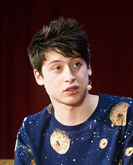

D'Aloisio was born in London, England in 1995 to Lou Montilla, a vice
president at UK Morgan Stanley and Diana D'Aloisio, a lawyer.
Shortly after D'Aloisio was born, the family moved to Australia where they
resided in Perth. The family returned to the United Kingdom when D'Aloisio was
seven and he grew up in London.
He was a student at the predominantly male
private school King's College School in Wimbledon, London, where he
received an academic scholarship. He lives in London, with his mother, father
and younger brother Matthew, 15.
Having completed his A level exams in Summer 2014, he now is a student at Oxford
University, whilst still fulfilling his duties as Product Manager on Yahoo News
Digest on the side.
D'Aloisio created the Trimit application for iOS in March 2011, which used an
analytical tool to condense text content into 1000, 500, or 140-character
summary text.
The app caught the attention of Apple who featured Trimit as a new
and noteworthy application on the App Store at the same time. The potential of
Trimit attracted the attention of a billionaire, who provided D'Aloisio with
US$300,000 in venture capital funding.
D'Aloisio used the feedback and criticism
from Trimit to completely re-design the application, and re-launched it in
December 2011, as Summly.
Summly aimed to solve perceived problems with the way news articles are
presented on smartphones, with the initial version of Summly being downloaded by
over 200,000 users. As a result of the corporate support, in November, 2012,
D'Aloisio received US$1,000,000 in new venture funding for Summly from several
international celebrities such as Yoko Ono, Ashton Kutcher and Stephen Fry, in
addition to Hong Kong business mogul Li Ka-shing.
As of March, 2013, Summly was
sold to Yahoo for a reported $30 million US dollars.
Summly's cover page images were created by visual artist/photographer Kevin
Abosch.
D'Aloisio completed a first round of venture capital funding for Summly from
Horizons Ventures. He is the youngest person in the world to raise venture
capital.
According to Wall Street Journal, ".. he contracted a team of Israeli coders who
specialize in natural language processing...". He also hired scientist Inderjeet
Mani, "a retired professor who'd written seminal books on the topic. He became
our main scientist", said D'Aloisio.
D'Aloisio and Summly have been covered by several major publications, including
ReadWrite,Business Insider, Wired,Forbes, The Huffington Post and TechCrunch.
D'Aloisio has also made numerous television appearances on CNBC, Bloomberg, BBC,
ITV, been written about in the British Metro newspaper, and been interviewed on
BBC Radio Five Live.
D'Aloisio also appeared on CBS This Morning in an interview
with Charlie Rose, CNBC Squawk Box, Bloomberg and appeared on CNN's Piers Morgan
Tonight in December 2012. Summly has had critical acclaim in receiving Apple's
Best Apps of 2012 award for "Intuitive Touch" and currently has a 4.5/5 star
rating on the App Store.
In addition to WSJ Innovator of the Year and appearing in Time Magazine's Most
Influential; D'Aloisio was named a Top 1000 Influential Londoner by Evening
Standard in 2012 and 2013.
D'Aloisio won the 2014 Apple Design Award. He also
appeared in the 30 under 30 list for Forbes Magazine, GQ Magazine's 100 Most
Connected Men of 2014 and the Mail on Sunday Top 100 things to watch in 2013.
D'Aloisio was included in the Sunday Times' 100 Makers of the 21st Century.
D'Aloisio was placed #30 on the 2014 Silicon Valley 100 by Business Insider.
D'Aloisio also won a Spirit of London Award in December 2012 as Entrepreneur of
the Year. D'Aloisio received one of the British Inspiration Awards for Young
Entrepreneur of the Year in 2013. He was also placed 1st in Evening Standard's
Top 25 under 25 for 2013. D'Aloisio has also received a Spear's Wealth
Management for Entrepreneur of the Year 2013, as well as a Merton Business
Award.